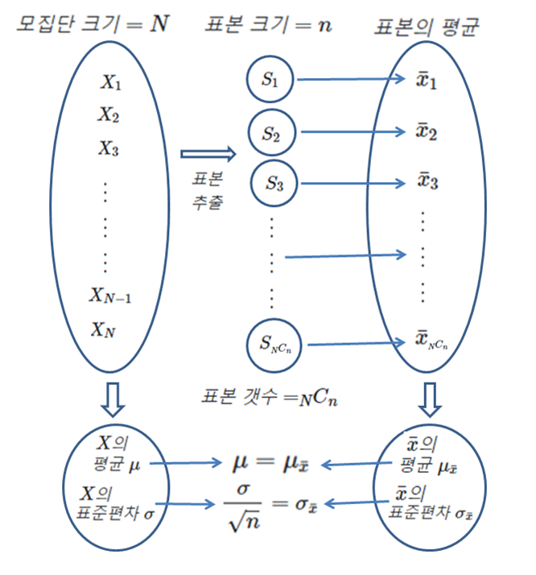

키 <- c(170, 166:174, 167:173, 168:172, 169:171)
키 <- 키 + 0.1 # 그래프 모양을 예쁘게 하려고 0.1을 더하다.
# freq=FALSE는 상대빈도를 사용하는 옵션
hist(키, freq=FALSE, main="키의 상대빈도", xlab="키, x 값", ylab="상대빈도", col="magenta", xlim=c(166,176), ylim=c(0,0.22), labels = TRUE)
points(x1, y1, pch = 16, col = "green") # 각 측정값을 나타낸다8 확률분포와 표집분포
8.1 확률
확률 probability 은 어떤 사건 event 이 일어날 가능성을 말합니다. 동전을 던져 앞면이 나올 가능성, 주사위를 두 번 던져서 합이 10이 되는 가능성, 통계시험을 80점 이상 받을 가능성 등등이 확률입니다. 확률은 0부터 1 사이의 숫자나 0%부터 100% 사이의 퍼센트로 나타냅니다.
통계에서 확률 공간 probability space 은 무작위 과정 random process 또는 ‘실험’ experience’ 을 통해 모델을 규정하는 수학적 개념입니다. 확률 공간은 반드시 세 개의 요소를 가집니다. (여기서 말하는 ’실험’과 ’표본’은 우리가 통상 사용하는 것과 좀 다릅니다. 확률론에서 정의한 용어니까, 사회과학적 용어와 약간 다릅니다.)
- 표본 공간 sample space, \(\Omega\), 실험이나 실행에서 모든 가능한 결과들 outcomes 의 집합이다.
- 사건 공간 event space, \({\mathcal F}\), 사건들의 집합, 사건은 결과의 한 하위집합 subset 에 속해 있다.
- 확률 함수 probability function, \(P\), 사건 공간이 포함한 각 개별 사건들에게 확률을 부여한다.
이 세 가지 요소를 통해 우리는 아래처럼 ’실험’의 확률을 예측합니다.
만일 ’실험’을 실행했는데 실행의 결과가 사건공간에 속한다면, 그 사건은 발생한 것이다. 이 과정을 아주 많이 반복한다면 확률 함수 \(P\)가 부여한 확률대로 사건이 발생하는 경향을 보인다.
어려워보이지만 사실 쉬운 설명입니다. 예를 들어 봅시다. 주사위를 던지는 ’실험’에서 표본공간은 {1, 2, 3, 4, 5, 6}입니다. 모든 가능한 결과를 포함하니까요. 우리가 원하는 게 2 이하 숫자가 나오는 것이면 사건공간은 {1, 2}입니다. 그리고 {1, 2}는 {1, 2, 3, 4, 5, 6}의 집합에 속하는 하위집합입니다. 주사위를 던지면 결과가 나옵니다. 즉, 여섯 숫자 중 하나가 나옵니다. 만일 1이나 2가 나오면 우리가 원하는 사건이 일어난 것입니다. 이걸 아주 많이 반복하면, 우리가 원하는 사건의 확률은 결국 \((\frac{1}{6}+\frac{1}{6})=\frac{1}{3}\) 가 된다는 겁니다. 여기서 \(\frac{1}{6}\) 이 주사위 개별 숫자가 가지는 확률함수입니다.
학률, 확률공간, 표본공간, 사건공간, 확률함수
Exercise 8.1
- 주사위를 굴렸을 때 표본 공간은 무엇입니까?
- 주사위 숫자가 2와 같거나 적게 나올 사건 공간은 무엇입니까?
- 주사위 숫자가 \(x\)와 같거나 적게 나올 사건의 확률 함수 \(f(x)\)를 작성하세요. 즉 \(P(X \le x)=f(x)\)
8.2 확률변수
확률변수는 무작위적 변수라는 이름이 더 잘 어울리며 모든 측정값이 무작위적 특성을 갖는다고 설명했습니다. ( 2 장의 확률변수 참고) 그런데 앞으로 변수값이란 용어가 등장하므로 혼동하지 않기 바랍니다. 측정값은 동일한 확률은 갖지만 변수값은 동일한 확률이 아닌데 확률변수라면 둘다 무작위적 확률을 가지는 겁니다.
예를 들어, 한국대 미디어학과 {철수, 영희, 복길, 희동, 경희} 5명 있고 각각의 키는 {160, 165, 170, 170, 175} 라고 합시다. 그러면 측정값이 다섯 개가 있는 겁니다. 모든 사람마다 키를 측정했으니까 사람 수만큼 측정값이 나오겠지요. 이 중에 한 사람을 무작위로 뽑는다면 모두가 동일한 확률을 가지므로 한 학생마다 선택 가능성이 \(\frac{1}{5}=0.2\)의 확률이 되고 마찬가지로 측정값이 뽑힐 확률도 0.2가 됩니다. 그런데 170cm인 측정값은 둘이지만 변수값으로 따지면 동일하므로 변수값 170cm가 선택될 확률은 \(0.2+0.2=0.4\) 가 됩니다. 각각의 측정값의 선택 가능성은 동일하고 특정한 변수값이 뽑힐 가능성은 해당 측정값의 빈도 수에 따라서 다르지만, 둘 다 확률은 무작위적입니다.
측정값 \(x_i\) 은 \(i\)번째 사람이 갖는 값이고 모두 동일한 선택 확률을 갖습니다. 변수값 \(x\)는 사람(사례, 관찰)과 연관이 없는 그저 척도의 크기만을 나타내는 숫자입니다. 해당 변수값을 측정값으로 갖는 사람이 몇 명이냐 하는 빈도에 따라서 확률이 결정됩니다. 그래서 측정값의 확률을 알고 해당 빈도를 알면 변수값의 확률도 결정됩니다.
아래의 그래프는 25명의 사람의 키를 측정한 것입니다. 따라서 측정값의 수, 즉 빈도는 25입니다. 변수값 166cm의 빈도가 1, 변수값 168cm의 빈도가 3, 변수값 170cm의 빈도가 5 등등입니다. 이것이 확률변수라면 모든 측정값의 선택 확률이 동일하므로 어떤 사람이 뽑혀서 키가 측정될 확률은 \(\frac{1}{25}\)입니다. 따라서 168cm의 변수값이 뽑힐 확률은 그래프의 빈도가 3이므로 \(\frac{3}{25}\)입니다. 170cm의 변수값이 선택될 확률은 \(\frac{5}{25}\)입니다. 개별 측정값의 확률이 결정되면 빈도에 따라 특정 변수값의 확률이 결정됩니다. 이것이 확률변수이고 이것이 확률분포입니다. 확률분포는 상대빈도가 확률을 나타냅니다 (왜냐하면 각 개체의 확률이 동일하니까.)
측정값, 변수값
8.3 이항확률분포
동전을 던졌을 때, 앞면이 나타나거나 뒷면이 나타나는 단 두개의 결과만 존재합니다. (아, 물론 옆면으로 우뚝 서는 기적의 사건은 제외합니다.) 앞면이 나타는 확률은 0.5, 뒷면도 0.5입니다. 동전을 한 번 던졌을 때 앞면이 나타나는 횟수가 0이면 확률은 0.5, 횟수가 1이면 0.5입니다. 동전을 두 번 던졌을 때, (뒷,뒷) (뒷,앞) (앞,뒷) (앞,앞) 등 네 경우가 있습니다. 네 경우 모두 확률은 \(\frac{1}{2} \times \frac{1}{2}=\frac{1}{4}\) 입니다. 앞면이 나타나는 횟수는 각각 0, 1, 1, 2가 됩니다. 따라서 변수값(앞면 횟수)에 따라 정리하면 0은 빈도가 1, 1은 빈도가 2, 2는 빈도가 1이 됩니다. 확률은 각각 \(\frac{1}{4}\), \(\frac{1}{4} + \frac{1}{4} = \frac{1}{2}\), \(\frac{1}{4}\) 입니다.
이렇게 앞면이 나타나는 횟수의 빈도와 확률에 따른 분포를 이항분포라고 합니다. 동전을 던져 나오는 결과가 무작위적이고 그 결과에 따라 앞면 횟수의 확률이 결정됩니다. 따라서 앞면이 나오는 횟수로 만들어지는 변수는 확률변수가 되고 그것의 분포인 이항분포는 확률분포가 되는 것입니다.
동전 던지기처럼 단 두 개의 사건만 무작위적으로 일어나는 것을 베르누이 시행 bernoulli trial 이라고 합니다. 베르누이 시행은 ’무작위적 실험’이므로 언제나 ’성공’과 ’실패’의 확률은 일정합니다. 두 사건만 존재하므로 ’성공’의 확률을 \(p\)라고 하면 ’실패”의 확률은 \(1-p\)입니다. 동전 실험이라면, 던졌을 때 앞면이 나올 확률이 \(p\)라고 하면 뒷면의 확률은 \(1-p\)가 됩니다. 베르누이 시행을 여러 번 했을 때 성공의 횟수를 빈도로 나타낸 분포를 이항분포 binominal distribution 라고 합니다. 베르누이 시행의 횟수를 \(n\), ’성공의 빈도를 \(x\), 성공의 확률을 \(p\)라고 할 때, 아래의 함수는 \(x\)의 확률(상대빈도)을 나타냅니다. \(n\) 번 시행하면 \(x\)는 0부터 \(n\)까지 존재하므로 그것을 모두 대입한 결과값을 그래프로 그리면 이항분포가 됩니다.
- 이항분포의 확률함수
\[f(x) = \binom{n}{x} p^{x} (1-p)^{n-x}\]
이항분포는 위의 이항분포 확률함수에 따라 분포를 아니까 이론적으로 평균과 표준편차 등을 계산할 수 있습니다.
\[평균: \; \mu=E(x)=np, \; \; 표준편차: \; \sigma=\sqrt{np(1-p)}\]
이항분포의 계산은 dbinom(x,n,p)함수로 가능하고, 직접 하려면 조합을 계산하는 choose 함수를 이용하여 choose(n,x) * p^x * (1-p)^(n-x)로 가능합니다.
베르누이 시행, 이항분포, 확률변수, 확률분포
Exercise 8.2
- 동전을 12번 던졌을 때 앞면이 7번 나올 확률은 얼마일까요?
- 동전을 12번 던졌을 때 앞면이 나오는 갯수를 X라고 하면 X의 평균과 표준편차는 얼마일까요?
8.4 확률함수와 확률분포
확률함수는 확률변수의 변수값을 대입하여 결과값을 확률(상대빈도)로 나타내는 함수입니다. 바로 앞에서 배운 이항분포의 함수가 바로 확률함수입니다. 확률함수의 결과값들로 이루어진 분포가 확률분포입니다. 따라서 확률분포는 확률변수의 변수값과 그 변수값의 확률(상대도수)로 구성된 분포입니다. 확률분포에서 그래프 안의 면적, 즉 확률함수로 그린 선과 밑면 사이의 면적이 확률입니다.
이산변수가 확률변수일 때 이산 확률분포 discrete probability distribution 를 이룹니다. 앞의 이항분포는 변수값이 정수이므로 이산 확률분포를 가집니다. 이산 확률함수를 확률질량함수 probability mass function 라고도 부릅니다. 확률분포에서 그래프 안의 면적이 확률입니다.
이항분포를 예로 들어 봅시다. 동전을 2번 던져서 앞면이 나오는 횟수를 변수라고 할 때, 변수값은 0, 1, 2, 세 가지가 있습니다. 확률은 각각 \(\frac{1}{4}\), \(\frac{1}{2}\), \(\frac{1}{4}\)입니다. 변수값이 정수이고 정수는 1씩 늘어나니까 밑변의 길이는 1입니다. 면적은 ’밑변x높이’니까 변수값 0의 면적이자 확률은 1x\(\frac{1}{4}\)이고 변수값 1의 면적이자 확률은 1x\(\frac{1}{2}\)이 됩니다. 그래프의 면적을 다 합하면 확률의 특성상 1이 되겠지요. 변수값이 정수면 밑변이 1이므로 1을 곱해도 마찬가지니까 높이인 상대도수가 그대로 확률이 되는 겁니다.
연속변수가 확률변수일 때 연속 확률분포 continuous probability distribution 를 이룹니다. 연속 확률함수는 확률밀도함수 probability density funcition 라고도 부르는데 사실 연속확률함수는 잘 안 쓰고 확률밀도함수라는 용어를 거의 사용합니다. 그리고 연속확률분포는 그냥 확률분포라는 용어를 사용합니다. 그러니 여러분도 확률밀도함수와 확률분포라는 용어의 의미에 주목해야합니다.
연속확률분포도 확률분포이므로 역시 그래프의 면적이 확률을 의미합니다. 그런데 이번에는 문제가 있습니다. 연속변수는 정수가 아니고 실수라서 무한한 수의 변수값이 존재합니다. 170cm가 5명, 171cm가 4명, 이렇게 되지 않고 170.1cm가 1명, 173.578cm가 1명, 173.785247cm가 1명, 이렇게 무한한 변수값에 대응해서 한 명씩 존재하게 됩니다. 즉 밑변의 길이가 \(\frac{1}{\infty}\)이어서 0라고 봐야합니다. 그래서 밑변x높이는 0이 나옵니다. 따라서 확률을 구하고 싶어서 변수값을 말할 때 구간을 명시해야합니다. 170cm-173cm 사이의 변수값에 해당하는 확률(상대도수), 이렇게 해야합니다. 바로 확률밀도함수를 그 구간으로 적분한 결과값이지요.
왜 이름이 확률밀도함수인지 궁금하지 않아요? 왜 이산변수는 ‘질량’이고 연속변수는 ’밀도’인지도 궁금하지 않나요? 비유해서 말하자면, 질량은 밑변이 있고 밀도는 밑면이 없는 것입니다. 중력을 예로 듭니다. 지구의 중력가속도는 9.8\(m/s^{2}\)입니다. 그럼 나를 당기는 힘이 9.8\(m/s^{2}\) 인가요? 아닙니다. 중력은 질량에 비례하므로 질량이 있어야 ’질량x중력가속도’ 해서 당기는 힘을 계산합니다. 따라서 “나는 70kg인데 지구가 나를 당기는 힘이 얼마인가요?” 이렇게 물으면 답이 나옵니다.
그러나 “나의 밀도가 0.9인데 나를 당기는 힘이 얼마인가요?” 이것은 답이 없습니다. 질량은 ’밀도x부피’로 계산하니까 부피를 알아야 질량이 나옵니다. 밀도가 0.9일 때 부피가 10\(l\)면 질량은 9kg, 부피가 100\(l\)이면 질량은 90kg입니다. 부피가 100\(l\)일 때는 부피가 10\(l\)일 때보다 중력은 10배로 작용합니다. 그래서 어린아이가 내 배 위에 올라도 버티지만 뚱뚱한 어른이 올라가면 버티지 못합니다. 확률질량함수는 변수값을 가지고 확률을 계산할 수 있고, 확률밀도함수는 변수값의 ’구간’을 정해줘야 확률을 구할 수 있습니다.
확률분포는 확률밀도함수로 표시될 수 있습니다다. X가 연속확률변수고 아래의 조건을 충족할 때 \(f(x)\)를 X의 확률밀도함수라 합니다.
\[ 1.\; P(X=x)=0 \]
연속확률변수 \(X\)가 특정한 변수값 \(x\)가 될 확률은 0입니다. (즉 밑변이 없습니다) 연속확률변수는 연속한 살수값을 가지므로 취할 수 있는 값이 무한히 많아서 그 중에 특정한 하나의 값을 가질 가능성은 없다고 봐야합니다. 따라서 구간으로 확률을 구해야 합니다.
\[ 2.\; 모든 \; X에 \; 대하여 \; f(x) \ge 0 \]
확률밀도함수는 항상 0이거나 양수 값을 갖습니다
\[ 3.\; \int_{-\infty}^{\infty} f(x) \; dx=1 \]
확률밀도함수를 적분하면 전체 면적은 1입니다.
\[ 4.\; \mathrm{P}( a\le X \le b)=\int_{a}^{b} f(x) \; dx \; (단 -\infty \le a \lt b \le \infty) \]
연속확률변수 X가 특정한 값 \(a\)와 \(b\) 사이에 있을 확률은 그 구간의 확률밀도함수 적분한 값, 즉 확률밀도함수 곡선과 밑변 사이의 면적과 같습니다.
이산확률분포, 확률질량함수, 연속확률분포, 확률밀도함수
8.5 확률분포의 종류
이론적으로 확립된 확률분포는 여러 가지가 있습니다. 이론적으로 확립된 분포는 분포가 알려져 있으므로 분포를 이용해서 여러 가지 통계적 분석을 할 수 있습니다. 대표적인 것이 정규분포, t 분포, \(\chi^{2}\) 분포, F 분포 등이 있습니다. 이들은 추론통계에 사용될 수 있으며 가설을 검증하거나 신뢰구간을 정하거나 모델을 검증할 수 있습니다.
8.6 정규분포
통계에서 가장 많이 활용하는 분포는 정규분포 normal distribution 입니다. 정규분포는 가우스가 물리 계측의 오차에 대한 확률분포로서 처음 소개하였습니다. 정규분포는 자연적인 환경에서 많이 발생하는 분포입니다. 정규분포는 대칭이며 아래가 넓고 위가 좁은 종 모양과 비슷합니다. 정규분포의 확률밀도함수는 아래와 같습니다. 즉 이렇게 생긴 확률분포가 정규확률분포입니다.
\[X \sim N(\mu, \; \sigma^{2}) \]
\[{\displaystyle f(x)={\frac {1}{\sigma {\sqrt {2\pi }}}}e^{-{\frac {1}{2}}\left({\frac {x-\mu }{\sigma }}\right)^{2}}}\;, \; -\infty \lt x \lt \infty\]
여기서 \(\pi\)=3.141592…, \(e\)= 2.71828…
정규분포는 정규확률밀도함수에 의해 이루어지므로 분포를 알 수 있습니다. 평균을 중심으로 해서 표준편차의 거리의 사이에 있는 측정값의 확률은, 즉 상대도수는, 68.3%입니다. 표준편차의 2배 거리 사이에 있는 확률은 95.4%이고, 3배 거리의 사이에 있는 확률은 99.7%입니다. 추론통계에서 그걸 이용하는 법을 배웁니다.
i정규분포에서 평균과 표준편차로 본 구간 확률 {#fig-pro-of-nor align=‘left’}
{kind=link}
아래는 \(\mu\) = 0, \(\sigma\) = 1 인 표준정규분포 곡선입니다. 정규분포곡선을 z값으로 표준화한 것입니다. z값을 계산하는 공식은;
\[Z= {\frac {X-\mu}{\sigma}}\]
# 표준정규분포
x <-seq(-4, 4, length = 500)
f <- dnorm(x, mean = 0, sd = 1)
plot(x, f, type = "l", col = "black", lwd = 2.0, ylim = c(0, 0.5), main = "표준정규분포")평균m과 표준편차 sd를 다르게 넣으면 달라집니다. 모두 정규분포곡선입니다.
x <-seq(-4, 4, length = 500)
y0 <- dnorm(x, mean = 0, sd = 1)
y1 <- dnorm(x, mean = 0, sd = 0.6)
y2 <- dnorm(x, mean = 0, sd = 2)
y3 <- dnorm(x, mean = 1, sd = 1)
y4 <- dnorm(x, mean = 2, sd = 1)
plot(x, y0, type = "l", col = "black", lwd = 2.0, ylim = c(0, 0.7), main = "표준정규분포곡선(검정), 다른 표준편차(빨강), 다른 평균(녹색)")
lines(x, y1, type = "l", lwd = 2.0, col = "red")
lines(x, y2, type = "l", lwd = 2.0, col = "red")
lines(x, y3, type = "l", lwd = 2.0, col = "green")
lines(x, y4, type = "l", lwd = 2.0, col = "green")이항분포에서 시행횟수가 커질 때 이항분포는 정규분포를 닮아갑니다. 이걸 이항분포의 정규근사 The normal approximation of the binomial distribution 라고 합니다.
par(mfrow = c(1,2)) # 그래프 둘을 옆으로 나란히 그린다.
# 이항분포: 동전 앞면 확률은 p=0.5, 시행횟수는 n=10번일 때 앞면 횟수는 x
n <- 10
p <- 0.5
x <- seq(0, n, by = 1)
labels = c("0", "", "", "3", "", "5", "", "7", "", "", "10" )
# 앞면의 횟수에 따른 확률질량함수. 즉 이론적인 실험의 기대값, y는 확률함수
y <- dbinom(x, size = n, prob = p)
barplot(y, names.arg = labels, xlab="앞면 나온 횟수", xlim = c(-0.2, 10.5), ylim = c(-0.006, 0.27), ylab="상대빈도", main="이항분포 n=10 (기대값)")
# 이항분포: 앞면 확률이 0.5, 시행횟수가 20번일 때 -- 실제 실험
p <- 0.5
n <- 20
# 이항본포의 난수를 천 개 뽑는다. 즉 10번 시행해서 앞면이 몇 개 나오는가? 하는 실험을 천 번 한다.
x <- rbinom(1000, n, p)
hist(x, breaks=seq(-0.5, n+0.5, by=1), freq=FALSE, xlab="앞면 나온 횟수", ylim = c(0, 0.20), ylab="상대빈도", main="이항분포 n=20 (천번 실험)")
curve(dnorm(x, mean = 10, sd = 2.236), 0, 20, col = "red", add = T) # 붉은 색 정규분포곡선을 추가로 넣는다정규분포, 표준정규분포, 정규근사
Example 8.1
통계점수가 평균이 60, 표준편차가 8인 정규분포를 하는 집단에서 통계점수가 55점이라면 z값은 얼마인가요? 상위에서 몇 %에 들어갈까요?
답:
풀이: 정규분포에서 55점에 대한 누적확률을 구한다 (상위 %를 구한다.)
z <- (55-60)/8
p <- pnorm(55, 60, 8, lower.tail = FALSE) # lower.tail = FALSE 는 상위 %
cat("z=", z, ",", " 상위", round(p, 2)*100, "%")z= -0.625 , 상위 73 %Exercise 8.3
평균이 3, 표준편차가 2인 정규분포 곡선을 그리고 거기에 동일한 조건의 누적분포 곡선을 넣으세요. 색을 달리하세요.
8.7 t 분포
분포는 변수값에 따른 빈도를 나타낸 것입니다. 확률분포는 확률변수의 분포이고요. t 분포는 Gosset가 student라는 익명으로 발표해서 student’s t 라는 이름으로 불립니다. t 분포는 정규분포와 모양이 아주 비슷한데 정규분포를 좀더 일반화한 것이라고 볼 수 있습니다. t 분포는 정규분포와 마찬가지로 좌우 대칭이며 종 모양의 형태를 가집니다. t 분포는 정규분포보다 더 넓게 분산되어 있습니다. 뒤에 배울 표집분포에서 표본의 크기가 30보다 작을 때 정규분포와 비슷하지만 분산이 넓어서 오차를 더 허용하는 t 분포를 자주 사용합니다.
t 분포를 사용하는 방식은 표준정규분포의 Z값을 사용하는 방식과 거의 같습니다. 아래는 표집분포에서 평균 \(\bar X\) 의 T값을 계산하는 공식입니다. T 값을 계산한 뒤에 해당 자유도를 찾아 확률을 검정합니다. T값은 Z값과 공식이 동일하지만 대응하는 분포의 값이 약간 다릅니다.
\[\displaystyle T= {\frac {{\bar {X}}-\mu_\bar X }{S_\bar X}}\]
참고로, 확률변수 \(T\)가 자유도 \(n\)인 \(t\) 분포를 가질 때 \(T\) 의 확률밀도 함수는 이렇습니다.
\[\displaystyle f(t)={\frac {\Gamma ({\frac {n +1}{2}})}{{\sqrt {n \pi }}\,\Gamma ({\frac {n }{2}})}}\left(1+{\frac {t^{2}}{n}}\right)^{-(n +1)/2} \]
# 표준정규분포와 여러 t 분포
x <-seq(-4, 4, length = 500)
y <- dnorm(x, mean = 0, sd = 1)
y1 <- dt(x, df =1)
y2 <- dt(x, df =2)
y3 <- dt(x, df =3)
y4 <- dt(x, df =4)
plot(x, y, type = "l", col = "red", lwd = 2.0, ylim = c(0, 0.5), main = "표준정규분포(빨강)과 여러 자유도의 t 분포(녹색)")
lines(x, y1, type = "l", lwd = 2.0, col = "green")
lines(x, y2, type = "l", lwd = 2.0, col = "green")
lines(x, y3, type = "l", lwd = 2.0, col = "green")
lines(x, y4, type = "l", lwd = 2.0, col = "green")
lines(x, y, type = "l", lwd = 2.0, col = "red") # 빨강 줄이 맨 나중에 나오게참고로 t 분포는 바로 다음에 배우는 \(\chi_2\) 분포와 연관이 있습니다. T가 자유도 df를 가지고 \(\chi^2\) 역시 자유도 df를 가진다면 아래 공식이 성립합니다. T와 \(\chi^2\) 는 서로 독립적입니다.
아래 공식에 따라 t 값을 계산하는데 그대로는 어려우니까 \(\chi^2\) 값을 그 아래의 공식에 따라서 대체합니다. \[ T={\frac {Z}{\sqrt {\chi^2/df }}}=Z{\sqrt {\frac {df }{\chi^2}}} \]
\[ S_{n}^{2}={\frac {1}{n-1}}\sum _{i=1}^{n}\left(X_{i}-{\overline {X}}_{n}\right)^{2} \]
\[ \chi^2 = (n-1)\frac{S_n^2}{\sigma^2}, \; \; 여기서 \chi^2 는 자유도 (n-1) 을 가진다 \]
\[ Z=\left({\overline {X}}_{n}-\mu \right){\frac {\sqrt {n}}{\sigma }} \]
위의 \(Z\)와 \(\chi^2\) 를 아래 좌측에 대입하면 우측이 나옵니다. \[ T\equiv {\frac {Z}{\sqrt {\chi^{2}/df }}}=\left({\overline {X}}_{n}-\mu \right){\frac {\sqrt {n}}{S_{n}}}\]
위의 공식에서 두 가지를 주목해야 합니다. 첫째는 알려지지 않는 \(\sigma^2\) 가 분자와 분모에서 서로 상쇄되어 없어져 t값의 계산이 가능해졌습니다. 둘째는 \(S_n\) 을 주목해야합니다. 통상 S는 단일한 값이지만 여기서는 표본 크기 \(n\)에 따라서 표집분포가 달라지게 되었습니다. 그래서 student’s t가 자유도에 따라 분포가 달라지게 됩니다.
t 분포
Example 8.2
키 평균이 170cm이고 표준편차가 8cm인 집단이 있습니다. 키 관찰값이 자유도 15인 t 분포를 갖는다면 키 163cm에 해당하는 t값은 얼마인가요? 이 집단에서 163cm 이하의 사람을 만날 확률은 얼마인가요?
답:
(163-170)/8
## [1] -0.875
pt(-0.875,15)
## [1] 0.1976844\(t = (x - \mu) / \sigma = (163-170)/8 = -0.875, \; \;p = pt(-0.875,15) = 0.197\)
$t = (x - \mu) / \sigma = (163-170)/8 = -0.875, \; \;p = pt(-0.875,15) = 0.197$ Exercise 8.4
평균이 3, 표준편차가 2이고 자유도가 30인 t 분포 곡선을 그리고 거기에 동일한 조건에 자유도가 4인 분포 곡선을 넣으세요. 색을 달리하세요.
8.8 카이제곱 분포
카이제곱 분포 \(\chi^{2}\) distribution 는 표준정규분포인 확률변수에서 서로 독립적이고 무작위적인 \(k\)개의 값을 꺼내어 제곱한 뒤에 그 합으로 이루어진 분포입니다. \(k\)는 자유도로 부르며 분포는 당연히 자유도에 따라서 달라집니다. 조금 아래에 자유도에 따른 \(\chi^{2}\) 분포 그래프가 있습니다.
예를 들어, 표준정규분포인 \(N(0,1)\)에서 3개의 Z값을 선택해 제곱의 합으로 \(Q\)라는 확률변수를 만든다면 \(Q\)=\(Z_{1}^{2}+Z_{2}^{2}+Z_{3}^{2}\)가 됩니다. 3개 선택해서 \(Q_1\) 만들고 또다른 세 개를 선택해서 \(Q_2\)를 만들고 … 이렇게 무한하게 \(Q_i\)를 만들면 그런 게 무한히 모인 \(Q\)는 자유도가 3인 \(\chi^{2}\) 분포를 한다는 겁니다.
참고로 \(\chi^{2}\) 분포는 감마분포의 특별한 경우입니다. 확률변수 X가 자유도 \(k\)인 \(\chi^{2}\) 분포 \(\chi^{2}(k)\)를 따를 때 \(\chi^{2}\) 분포의 확률밀도함수는 아래와 같습니다.
\[{\displaystyle f(x;\,k)={\begin{cases}{\dfrac {x^{{\frac {k}{2}}-1}e^{-{\frac {x}{2}}}}{2^{\frac {k}{2}}\Gamma \left({\frac {k}{2}}\right)}},&x>0 \end{cases}}}\]
\(\chi^{2}\) 의 자유도 \(k\) 는 \(\chi_k^{2}\) 나 \(\chi^{2}(k)\) 로 표기합니다.
참고로 임의의 \(a\)에 대해서 감마함수는 아래처럼 정의됩니다.
\[\displaystyle \Gamma (a)=\int _{0}^{\infty }x^{a-1}e^{-x}\,dt,\; 단 \; a >0 \]
위의 식이 복잡하다면, 지금부터 말하는 표집분포에 사용되는 방법만 생각하면 됩니다. 정규분포인 모집단 \(N(\mu,\sigma^{2})\)에서 크기가 \(k\)인 표본 {\(X_{1}, X_{2}, \cdots , X_{n}\)}을 추출했을 때 아래 식에 의한 \(\chi^{2}\) 값은 자유도 \(k-1\)인 \(\chi^{2}\)분포를 따른다는 사실을.
\[\chi^{2}=\sum Z_i^{2} = \frac{\sum_{i=1}^{k} (X_i-\bar X)^{2}}{\sigma^{2}} = \frac{(k-1)S^{2}}{\sigma^{2}} \sim \chi^{2}_{k-1}\]
# 자유도
df <- 5
# 분포를 그리기 위한 카이제곱의 값
x <- seq(0, 10, length=100)
# 카이제곱분포의 값 (확률밀도함수에 카이제곱을 넣어서 구한 값)
y <- dchisq(x, df)
# 카이제곱분포 그리기
plot(x, y, type="l", col = "purple", xlim = c(0, 10), ylim = c(0, 0.5), xlab="카이제곱", ylab="확률밀도", main="카이제곱분포")
#여기까지가 AI chatGPT가 코딩
y1 <- dchisq(x, 1)
y2 <- dchisq(x, 2)
y3 <- dchisq(x, 3)
y4 <- dchisq(x, 4)
lines(x, y1, type = "l", lwd = 2.0, col = "red")
lines(x, y2, type = "l", lwd = 2.0, col = "orange")
lines(x, y3, type = "l", lwd = 2.0, col = "green")
lines(x, y4, type = "l", lwd = 2.0, col = "blue")
legend("top", ncol = 3, col = c("red", "orange", "green", "blue", "purple"), lwd = 2.0, lty = 1, bty = "n",
legend = c("자유도 1", "자유도 2", "자유도 3", "자유도 4", "자유도 5"))
참고: 위의 코드는 챗지피티를 일부 이용했어요
knitr::include_graphics('images/chi-distr-by-chatgpt.png')아래는 4종류의 자유도와 범례(legend)를 갖춰 만들라는 부탁을 받은 chatGPT의 코딩
# Set the degrees of freedom for the chi-square distributions
df <- c(1, 2, 3, 4)
# Create a sequence of x values to plot the distributions
x <- seq(0, 15, length=100)
# Calculate the probability density function of the chi-square distributions
y1 <- dchisq(x, df[1])
y2 <- dchisq(x, df[2])
y3 <- dchisq(x, df[3])
y4 <- dchisq(x, df[4])
# Plot the chi-square distributions with colored legends
plot(x, y1, type="l", col="red", lwd=2, xlab="x", ylab="Probability Density", main="Chi-Square Distributions with Different Degrees of Freedom")
lines(x, y2, col="green", lwd=2)
lines(x, y3, col="blue", lwd=2)
lines(x, y4, col="purple", lwd=2)
legend("topright", legend=c(paste("df=", df[1]), paste("df=", df[2]), paste("df=", df[3]), paste("df=", df[4])), col=c("red", "green", "blue", "purple"), lwd=2)
카이제곱 분포
8.9 F 분포
F 분포는 각각 \(\chi^{2}\) 분포를 하는 2개의 독립적 확률변수로 이루어진 분포이며 따라서 2개의 자유도를 가지고 그것에 따라 분포가 달라집니다. 확률독립변수를 각각 \(V_1\), \(V-2\) 라고 하고 자유도를 \(d_1\)\(d_2\) 라고 할 때 아래의 식이 성립합니다.
\[\displaystyle F={\frac {V_{1}/d_{1}}{V_{2}/d_{2}}} \;=\; \sim F(d_1, d_2) \]
\(X\)에 대한 확률밀도함수는 아래와 같이 표시됩니다.
\[ f(x) = \frac{\Gamma(\frac{d_1 + d_2}{2})}{\Gamma(\frac{d_1}{2}) \Gamma(\frac{d_2}{2})} \left(\frac{d_1}{d_2}\right)^{\frac{d_1}{2}} \frac{x^{\frac{d_1}{2}-1}}{\left(1+\frac{d_1}{d_2}x\right)^{\frac{d_1+d_2}{2}}} \]
여기서 \(x \gt 0\), \(\Gamma\)는 \(\Gamma\) 함수입니다.
F 분포
8.10 각 분포에 대한 R 함수
지금까지 정규분포, t 분포, \(\chi^2\) 분포, F 분포 등 분포 4 종류를 배웠습니다. R에는 각 분포마다 4개의 함수가 있습니다.
| 함수 | 정규분포 | t 분포 | \(\chi^2\) 분포 | F 분포 |
|---|---|---|---|---|
| 확률밀도함수 | dnorm(x, mu, sigma) | dt | dchisq | df |
| 누적밀도함수 | pnorm(x, mu, sigma) | pt | pchisq | pf |
| 역누적밀도함수 | qnorm(k, mu, sigma) | qt | qchisq | qf |
| 난수발생함수 | rdorm(n, mu, sigma) | rt | rchisq | rf |
- d는 확률밀도함수: density function. 준 값의 확률(상대빈도)을 알려준다. 통상 분포 곡선을 그릴 때 사용한다.
- p는 누적밀도함수: cumulative density function. 준 값에 대한 누적확률을 알려준다. 추정과 검정에서 대개 이것을 사용한다.
- q는 역누적밀도함수: inverse cumulative density function. upper k % of quantile of distribution. 준 누적확률에 대한 해당 값을 알려준다.
- r은 난수발생함수: random numbers. 해당 분포에 따라서 난수들을 발생시킨다. (즉 표본을 뽑아준다)
누적밀도함수에서 오른쪽부터 누적을 하려면 lower.tail = FALSE를 넣으면 됩니다. 예를 들어,
# 자유도 14를 갖는 t 분포에서 t값 -0.785 에 해당하는 누적확률은 (왼쪽 면적)
pt(-0.785, 14)
# 오른쪽 면적을 구하려면 1에서 빼면 된다 (오른쪽 면적 = 1-왼쪽 면적)
1-pt(-0.785, 14)
# 오른쪽 면적을 직접 구하려면 (오른쪽 면적)
pt(-0.785, 14, lower.tail = FALSE)이 외에도 이항분포 binominal distribution 의 함수 dbinom(p-, q-, r-), 균일분포 uniform distribution 의 함수 dunif (p-, q-, r-), 지수분포 expotential distribution 의 함수 dexp (p-, q-, r-) 등 여러 분포에 대한 함수가 같은 방식으로 더 있습니다.
8.11 표집분포
표집분포 sampling distribution 는 한국에서 표본분포라고도 합니다. 모집단에서 가능한 모든 표본을 추출해서 통계량을 계산한다면 매우 많은 통계량이 산출될 것이고, 그 통계량의 분포를 표집분포라고 합니다.
평균을 예로 들어 보죠. 모집단을 한국의 고등학생으로 설정하고 100명 크기의 표본을 뽑아 키 평균을 산출한다고 하죠. 평균이 하나 나오는데 170cm라고 합시다. 또 다른 100명 크기 표본을 뽑아 평균을 산출하니 이번에는 167cm가 나왔습니다. 또 다른 표본을 뽑아 평균을 산출하고 … 이런 식으로 가능한 모든 표본을 뽑아서 모든 평균을 산출하는 겁니다. 고등학생 수가 약 120만 명이므로 거기서 100명을 뽑는다면 표본의 가짓수가 엄청나게 많을 겁니다. 흔히 말하는 천문학적인 숫자의 표본들이 나오고 그 만큼 엄창난 수의 평균이 산출될 겁니다. 이러한 가능한 모든 평균을 산출하여 늘어놓은 분포가 바로 표집분포입니다. 이번 예는 100명 크기 표본의 키 평균의 표집분포입니다.
표집분포는 산출되는 평균 등의 통계량이 확률변수이므로 확률분포입니다. 통계량의 모든 산출값이 선택될 확률이 동일한 거죠. 이론적으로 확률변수로 논의되는 통계량은 \(\bar X\) 처럼 대문자로 표시하고 실제로 표본을 뽑아 계산한 통계량은 \(\bar x\) 처럼 소문자로 표시합니다. 분산의 경우에도 \(S^{2}\)와 \(s^{2}\)로 각각 표시합니다. 다른 부분에서도 동일한 원칙이 적용됩니다. 확률변수로서 논의할 때는 대문자, 실제 측정한 숫자로서 논의할 때는 소문자입니다.
표집분포, 표본분포, 통계량
8.11.1 중심극한 정리
정규분포에서 나온 평균의 표집분포는 정규분포를 이루지만 정규분포가 아닌 비정규분포에서 나온 평균의 표집분포는 정규분포가 아닐 수 있습니다. 추론 통계애서 추론을 하려면 분포를 알아야 하는데 정규분포가 아니라면 추론을 하기가 어렵습니다. 중심극한 정리 central limit theorem 는 이런 걱정을 없애줍니다.
중심극한정리는 비정규분포에서 나온 평균의 표집분포라도 표본의 크기가 충분히 크다면 정규분포를 갖는다고 알려줍니다. 따라서 추론통계분석이 가능합니다.
위의 내용을 중심극한정리 공식으로 나타내자면
평균이 \(\mu\) 이고 분산이 \(\sigma^{2}\)인 모집단에서 크기 \(n\)인 표본의 평균 \(\bar X\)의 분포는 \(n \rightarrow \infty\) 일때
\[\displaystyle \bar X \rightarrow N(\mu, \frac{\sigma^{2}}{n}), \; Z=\frac{\bar X - \mu}{\frac{\sigma}{\sqrt n}} \rightarrow N(0,1) \]
중심극한정리, 정규분포, 비정규분포, 표본평균의 분포
8.12 평균의 표집분포; 한 모집단
모집단이 정규분포를 한다면 그리고 표본의 크기가 충분하다면, 표본평균 \(\bar X\) 의 표집분포는 정규분포를 합니다. 그리고 표집분포의 평균 \(\mu_\bar X\) 은 모집단의 평균 \(\mu\) 과 같고, 표집분포의 표준편차 \(\sigma_\bar X\) 는 모집단의 표준편차를 \(n\) 으로 나눈 \(\frac{\sigma}{\sqrt n}\)과 같습니다. 간단히 말해서:
- 표본평균들의 평균은 모평균과 같다:
\[ E(\bar X) = \mu_\bar X = \mu\]
- 표본평균들의 표준편차는 모표준편차를 \(\sqrt n\)으로 나눈 것과 같다:
\[S(\bar X) = \sigma_\bar X = \frac{\sigma}{\sqrt n}\]
아래는 모집단에서 무한한 표본을 추출해서 평균의 표집분포를 만드는 그림입니다.

모집단이 정규분포를 하지 않을 때는 중심극한 정리에 따라 표본의 크기가 충분히 커지면, 약 30 이상이 되면, 표집분포는 정규분포에 근접하며 따라서 위의 공식을 동일하게 적용합니다. 즉 표본의 평균들은 정규분포를 합니다.
위에서 논의한 것은 모집단이 무한모집단일 경우를 가정한 것입니다. 무한모집단이 아닐 경우에 둘로 나뉩니다. 유한모집단이지만 복원추출 sampling with replacement 을 한다면 무한모집단과 동일한 방식으로 적용할 수 있습니다. 복원추출은 표본을 뽑아도 그 표본이 모집단에 다시 그대로 복원된다는 가정을 하니까 무한모집단과 유사합니다. 문제가 되는 것은 비복원추출 sampling without replacement 입니다. 유한한 모집단에서 표본을 뽑으면 모집단의 크기가 달라져서 일반적인 공식을 적용하지 못하고 보정을 해줘야 합니다.
- 유한모집단 비복원추출일 경우에 아래의 공식을 적용한다.
\[S(\bar X) =\sigma_\bar X = \frac{\sigma}{\sqrt n} \sqrt \frac{N-n}{N-1}\]
뒷부분인 \(\sqrt \frac{N-n}{N-1}\)를 따로 유한모집단 수정계수 finite population correction factor 라고 합니다.
표본을 조사해서 모평균 \(\mu\) 을 추정하거나 검정할 때 정규분포를 사용합니다. 이때 모분산 \(\sigma^{2}\) 이 필요한데 모분산은 통상 알려져 있지 않으므로 표준정규분포 \(Z=\frac{\bar X-\mu}{\sigma/\sqrt n}\) 를 이용하기 어렵습니다. 하지만 정규분포의 모집단에서 나온 표본평균 \(\bar X\)의 표집분포는 정규분포를 한다고 이미 알려졌고, 비정규분포 모집단의 표본평균도 중심극한 정리에 의해서 표본의 크기가 크다면 정규분포를 한다고 알려져서 문제가 없습니다. 왜냐하면 정규분포를 한다면 표본분산이 모분산과 유사하므로 대신 사용해도 문제가 적기 때문입니다. 표본의 크기가 30 이하일 때 충분히 크지 못하므로 표준정규분포인 z분포를 사용할 수 없는데 이때 자유도가 \(n-1\) 인 t 분포를 사용합니다.
우리는 평균의 표집분포에서 표준편차를 계산할 때 모집단의 표준편차 \(\sigma\) 를 사용해야 하지만 실제로는 모집단의 표준편차를 모르므로 표본의 표준편차 \(S\) 를 사용합니다. 그래서 표본의 크기가 작아지면 오차의 가능성이 높아집니다. 그래서 표본의 크기가 적으면, 30 이하면, t 통계량을 사용합니다. \(t\) 분포는 \(n-1\) 의 자유도에 따라 분포가 약간씩 다릅니다.
\[\displaystyle t= {\frac {{\bar {X}}-\mu_\bar X }{S_\bar X}}={\displaystyle {\frac {{\bar {X}}-\mu }{\frac{S}{\sqrt {n}}}}}, \]
\[ 여기서\; \; \displaystyle S={\sqrt \frac {\sum _{i=1}^{n}(X_{i}-{\bar {X}})^{2}}{n-1}} \]
무한모집단, 유한모집단, 복원추출, 비복원추출, 유한모집단 수정계수, t 값
Example 8.3
모집단의 나이 평균이 40살이고 표준편차가 6살입니다. 크기가 40인 표본을 모두 추출해서 평균을 계산한다면, 그 표본평균들의 평균과 표준오차는 얼마가 될까요?
답: \(\mu_{\bar X}\)=40, \(\sigma_{\bar X}\)=0.9486833
$\mu_{\bar X}$=40, $\sigma_{\bar X}$=`r 6/sqrt(40)`Exercise 8.5
모집단의 평균이 3이고 표준편차가 2일 때, 크기가 36인 표본의 평균의 표집분포 곡선을 그리세요.
Exercise 8.6
정규분포인 모집단에서 크기가 16인 표본을 추출하여 계산하니까 평균이 3이고 표준편차가 2가 나왔습니다. 이때 표본 평균의 표집분포 곡선을 그리세요.
8.13 평균 차이의 표집분포; 두 모집단
이번에는 모집단이 두 개 있을 때 평균 차이의 표집분포입니다. 평균이 각각 \(\mu_1\), \(\mu_2\)이고 표준편차가 \(\sigma_1\), \(\sigma_2\) 인 두개의 독립적인 모집단이 있다고 합시다. 또 그 모집단에서 각각 크기가 \(n_1\), \(n_2\) 인 표본을 추출했다고 합시다. 만약 표본이 충분히 크다면 두 표본의 평균 차이인 \(\bar x_1-\bar x_2\) 는 평균이 \(\mu_1-\mu_2\)이고 표준편차가 \(\sqrt{\frac{\sigma_1^{2}}{n_1}+\frac{\sigma_2^{2}}{n_2}}\) 인 정규분포를 합니다.
정리하면
\[ \mu_{\bar x_1-\bar x_2}=\mu_1-\mu_2 \]
\[ \sigma_{\bar x_1-\bar x_2} = \sqrt{\frac{\sigma_1^{2}}{n_1}+\frac{\sigma_2^{2}}{n_2}} \]
Example 8.4
모집단에서 남자의 나이 평균은 44살이고 표준편차는 6살, 여자의 나이 평균은 40살이고 표준편차는 4살입니다. 크기가 40인 표본을 남녀 별로 각각 추출해서 남녀 평균의 차이를 계산하는 걸 가능한 모든 경우에 실행한다면, 그 표본평균의 차이들의 평균과 표준오차는 얼마가 될까요?
답: \(\mu=44-40=4\), \(\sigma\)=1.1401754
$\mu=44-40=4$, $\sigma$=`r sqrt(6^2/40+4^2/40)`Example 8.5
국민대학교 1학년과 2학년의 성적 차이를 추정하려고 합니다. 둘다 표본 크기는 40명씩입니다. 1학년 평균은 3.40이고 표준편차는 0.2, 2학년 평균은 3.55이고 표준편차는 0.22로 결과가 나왔습니다.
- 1학년과 2학년의 평균 차이의 평균은 얼마로 추정할 수 있을까요?
- 또 평균차이에 대한 표준오차는 얼마로 추정할 수 있을까요?
답
# collapse: true 이 옵션을 쓰면 결과가 붙어서 출력합니다.
m_1<-3.40 # 1학년
sd_1 <-0.2
n_1<-40
m_2<-3.55 # 2학년
sd_2<-0.22
n_2<-40
m_diff<-m_1-m_2 # 평균 차이
se <- sqrt(sd_1^2/40+sd_2^2/40) # 평균 차이의 표준오차\(\mu_{\bar X1-\bar X2}=\) = -0.15, \(\sigma_{\bar X1-\bar X2}\)=0.0470106
$\mu_{\bar X1-\bar X2}=$ = `r m_diff`, $\sigma_{\bar X1-\bar X2}$=`r se`Exercise 8.7
바로 위의 Example 8.5 자료를 이용하여 평균 차이의 분포 그래프를 그리세요.
8.14 분산의 표집분포; 한 모집단
분산의 표집분포는 \(\chi_2\) 분포를 이용해서 알 수 있습니다.
- 모집단의 분산
\[ Var(X)= \sigma^{2} = \frac{\sum_{i=1}^{N}(X_i -\mu)^{2}}{N}\]
- 표본의 분산
\[ S^{2} = \frac{\sum_{i=1}^{n}(X_i -\bar X)^{2}}{n-1}\]
- 카이제곱분포의 정의, 표준화한 변수 Z의 분산
\[ Z \sim N(0, 1)일 때,\; \; Z_1^{2}+Z_2^{2}+Z_3^{2}+ ... +Z_n^{2} \sim \chi^{2}(n) \]
- 표본분산과 모분산의 관계
\[ \displaystyle \chi^{2}= \frac{(n-1)S^{2}}{\sigma ^{2}} \sim \chi_{n-1}^{2} \]
즉 표본분산에 \(n-1\)을 곱한 것을 모분산으로 나누면 \(\chi_2\)값이 되고 이것은 자유도 \(n-1\)의 \(\chi_2\) 분포를 합니다. 따라서 표본분산과 모분산이 같아질수록 \(\chi_2\)값은 \(n-1\)에 근접합니다. 모분산이 크면 값이 작아지고, 표본분산이 크면 값이 커집니다. \(n\)이 충분히 커지면, 즉 30이 넘으면 \(\chi_{2}\)는 정규분포에 가까와집니다.
Example 8.6
모분산이 30일 때 크기가 16인 표본의 분산이 36보다 작을 확률은 얼마인가요?
답: 모분산과 표본분산의 관계는 위 공식처럼 자유도 \((n-1)\)인 \(\chi^2\) 분포를 따른다. 즉 \(\sigma^2\)=30일 때 \(n\)=16인 표본분산의 분포에서 \(S^2\)=36인 값의 확률이 얼마인가하는 문제다. 공식에 대입하면,
\[ P \left( \chi^{2} \le \frac{(n-1)S^{2}}{\sigma ^{2}} \right) = P \left( \chi^{2} \le \frac{(16-1) 36}{30} \right) = P \left( \chi^{2} \le 18 \right)\]
따라서 자유도가 15이고 18보다 작은 \(\chi^2\)값이 나올 (누적)확률은 0.7373344이다.
# 답의 위 공식에서 큰 괄호를 집어넣는 방법: \left( \right)
$$ P \left( \chi^{2} \le \frac{(n-1)S^{2}}{\sigma ^{2}} \right) = P \left( \chi^{2} \le \frac{(16-1) 36}{30} \right) = P \left( \chi^{2} \le 18 \right) $$
# 원문에 R 함수를 넣어 결과를 출력하는 방법
따라서 자유도가 15이고 18보다 작은 $\chi^2$값이 나올 (누적)확률은 `r pchisq(18,15)`이다. 8.14.1 분산의 표집분포; 두 모집단
두 모집단의 분산 표집분포는 \(F\) 분포를 이용해서 알 수 있습니다. 정규분포를 하며 각각 \(\sigma_1^{2}\), \(\sigma_2^{2}\) 의 분산을 갖는 독립적인 두 모집단에서 각각 \(n_1\), \(n_2\) 의 크기를 가진 표본을 뽑아 분산의 표집분포를 만들어봅시다. 두 표본분산을 각각 \(S_1\), \(S_1\) 라고 할때 다음과 같은 관계가 형성됩니다.
\[ \displaystyle \chi_1^{2}= \frac{(n_1-1)S_1^{2}}{\sigma_1^{2}} \sim \chi^{2}(n-1) \]
\[ \displaystyle \chi_2^{2}= \frac{(n_2-1)S_2^{2}}{\sigma_2^{2}} \sim \chi^{2}(n-1) \]
\[\displaystyle \frac{\chi_1^{2}/v_1}{\chi_2^{2} / v_2} = \frac{S_1^{2}/\sigma_1^{2}}{S_2^{2}/\sigma_2^{2}} \sim F(v_1, v_2)\] \[ 위에서 \; \; v_1(자유도)=n_1-1, \; \; v_2(자유도)=n_2-1\]
여기에서 우리가 만일 두 모집단의 분산이 같다고 가정을 한다면 \((\sigma_1^{2}=\sigma_2^{2})\) 위의 식은 아래처럼 간단해집니다.
\[ \frac{S_1^{2}}{S_2^{2}} \sim F(v_1, v_2) \]
위의 공식들에서 분자와 분모가 바뀌면 역수가 됩니다. 그래서 아래와 같은 공식이 성립합니다. 자유도의 순서가 바뀌는 걸 주의하세요.
\[ F_{\alpha} (v_1,v_2) = \frac{1}{F_{1-\alpha} (v_2, v_1)} \]
\(F\) 분포도 표본 크기가 커지면 정규분포에 가까와집니다.
왜 n이 아니고 n-1인가?
확률 변수와 표집 분포를 배웠으니 이제 표본 표준편차가 왜 n이 아니라 n-1로 나누어야 하는지, 그 이유를 기대값을 사용해서 설명할 수 있게 되었습니다.
\[ E(S^{2})=E \Big[ \frac{\sum(x_i-\bar{x})^{2}}{n-1} \Big] = \frac{1}{n-1} E \Big[ \sum \big( \; (x_i - \mu) - (\bar{x}-\mu) \; \big)^{2} \Big] \]
\[ \; \; \; \; \; \; \; \; \; \; \; \; \; \; = \frac{1}{n-1} E \Big[ \sum \big( \; (x_i - \mu)^{2} - 2(x_i-\mu)(\bar{x}-\mu) + (\bar{x}-\mu)^{2} \; \big) \Big] \]
\[ = \frac{1}{n-1} E \Big[ \sum (x_i - \mu)^{2} - n(\bar{x}-\mu)^{2} \; \Big] \; \; \; \; \; \; \; \; \; \; \; \; \; \; \; \; \; \]
\[ = \frac{1}{n-1} \sum E (x_i - \mu)^{2} - \frac{n}{n-1}E(\bar{x}-\mu)^{2} \; \Big] \; \; \; \; \; \; \; \]
\[ = \frac{1}{n-1}n\sigma^{2} - \frac{n}{n-1}\sigma^{2}_\bar{x} \]
\[ = \frac{n}{n-1} \sigma^{2} - \frac{n}{n-1} \frac{\sigma^{2}}{n} \]
\[ = \frac{n}{n-1} \sigma^{2} - \frac{1}{n-1} \sigma^{2} \]
\[ = \sigma^{2} \; \; \; \; \; \; \; \; \; \; \; \; \; \; \; \; \; \; \; \; \; \; \; \; \; \; \]